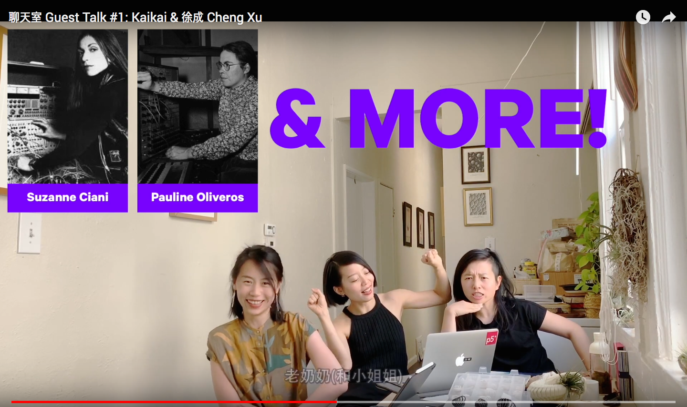

Qtv
Project Info
Q&A
What are you up to?
I am a Chinese artist and designer based in Los Angeles.
How did you get started with p5.js?
My partner introduced me to p5.js, which I learned mainly by watching free online video tutorials. My first p5.js project was drawing some shapes with different colors.
How did you use p5.js in this project?
This project started with an idea of teaching my mom, who lives in China and doesn’t speak English, to code with p5.js. This project was difficult on multiple levels, and I wanted to start by identifying the main reasons why it’s more challenging for someone like my mother to learn to code—primarily due to the lack of free creative coding education resources. Most of the free resources to learn creative coding are unavailable in China. The p5.js tutorials on YouTube as well as the p5.js Twitter and Instagram accounts are inaccessible in China because of internet censorship.
I learned a lot from YouTube videos such as the Coding Train, but the more I watched coding tutorials online, the more I realized how difficult it is to find other womxn and people of color teaching coding, especially in Mandarin. I wanted to help other Chinese womxn relate to creative coding.
I am working on opening up the video channels to other Chinese creatives who want to contribute to the educational resource together, like interviews and guest tutorials. If you are interested in teaching/talking about creative coding in Mandarin, HMU!
What's your favorite p5.js feature?
The p5.js Web Editor is my favorite feature. It makes web-based creative coding seamless.
Did you face any challenges working on this project? If so, how did you overcome them?
Learning to code in a second language was difficult and the lack of community made this process even harder. I hope to speak from my experience as a beginner and someone who once felt like an outsider to the creative coding and video tutorial world.
I spend a lot of time researching the latest technology for my videos. In the end, I decided on using my phone to record and iMovie to edit. I hope to encourage others that it doesn’t take a lot of expensive gears to get started making instructional videos.
Another issue I came across was my own fear of putting myself online. I first had to get over my anxiety of making mistakes in the videos or receiving negative comments online. Often womxn and people of color are targets for online harassment. I’m hoping to help set an example for other womxn and people of color that it’s ok to put yourselves online and strengthen your communities by sharing your knowledge. Eventually, we will be able to stop online harassment by creating strong diverse communities.
What's a cool thing we should check out?
I am very excited about Tiny Tech Zines in LA.